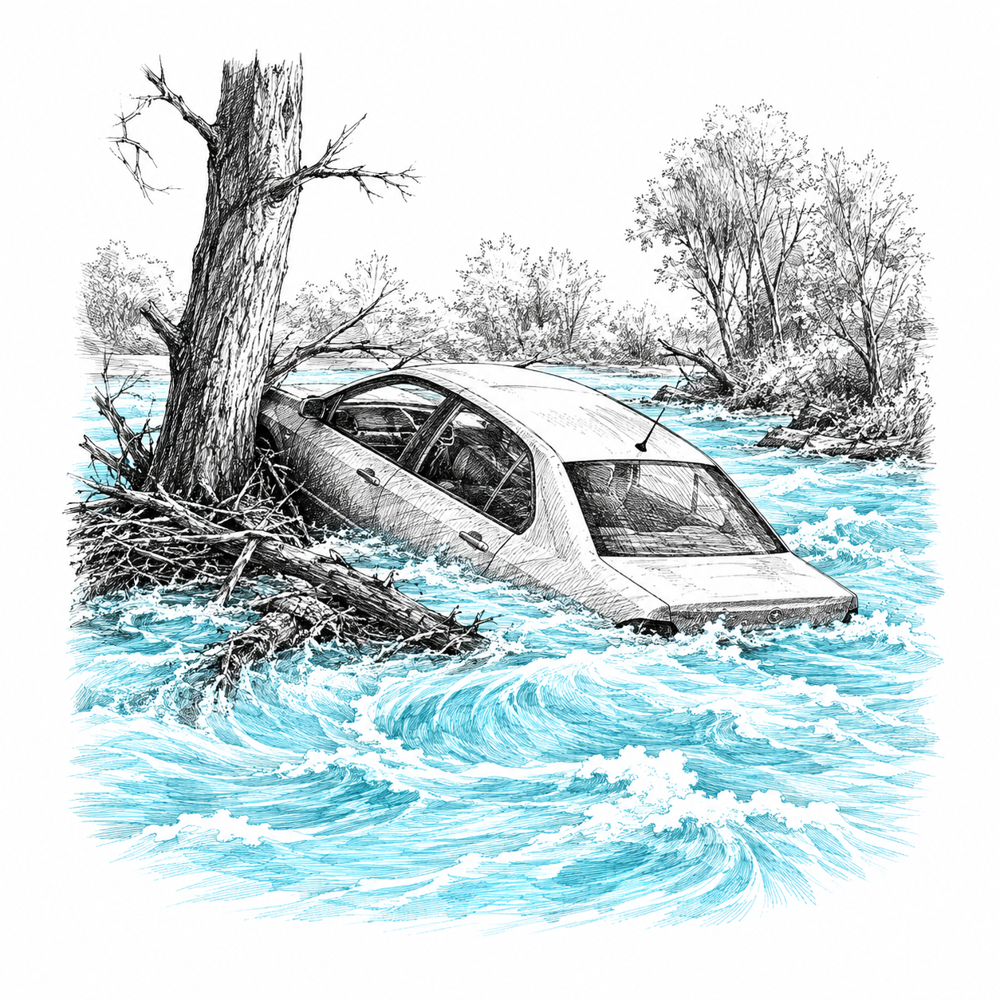
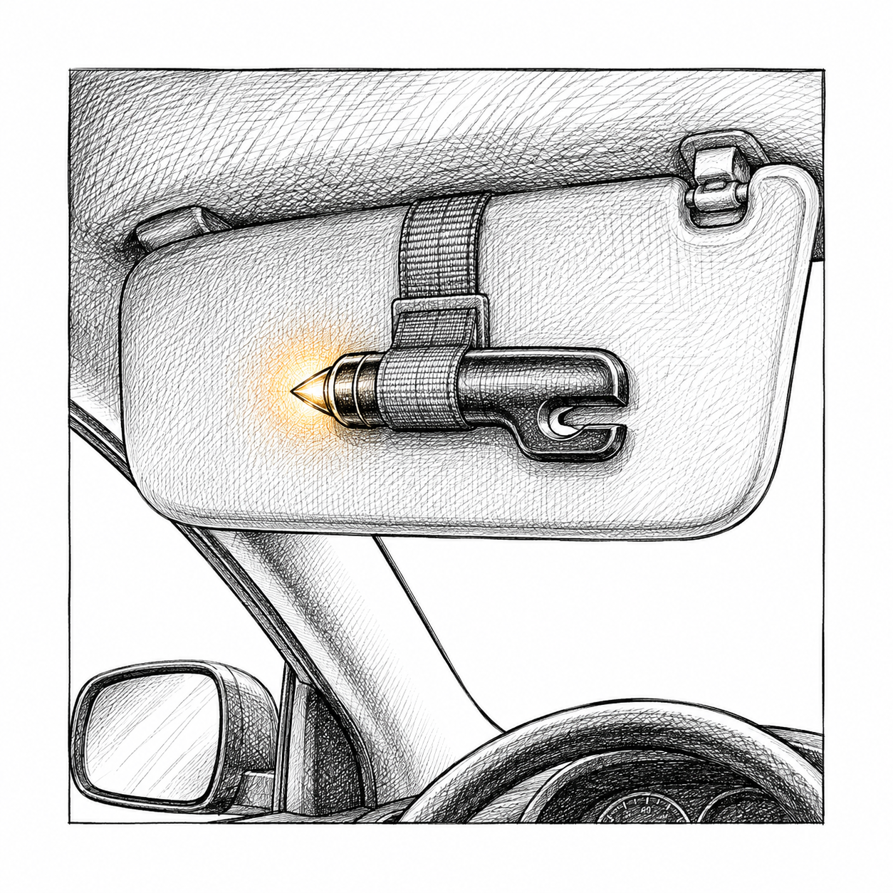
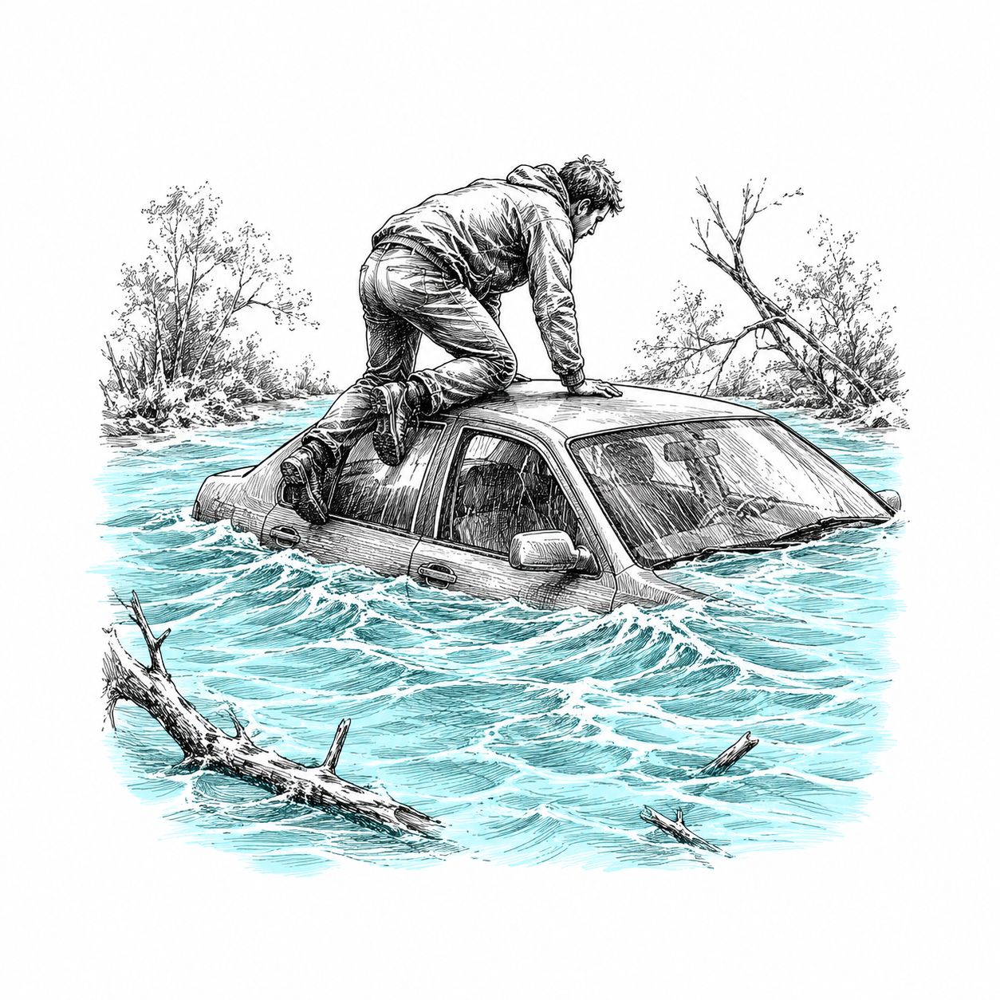
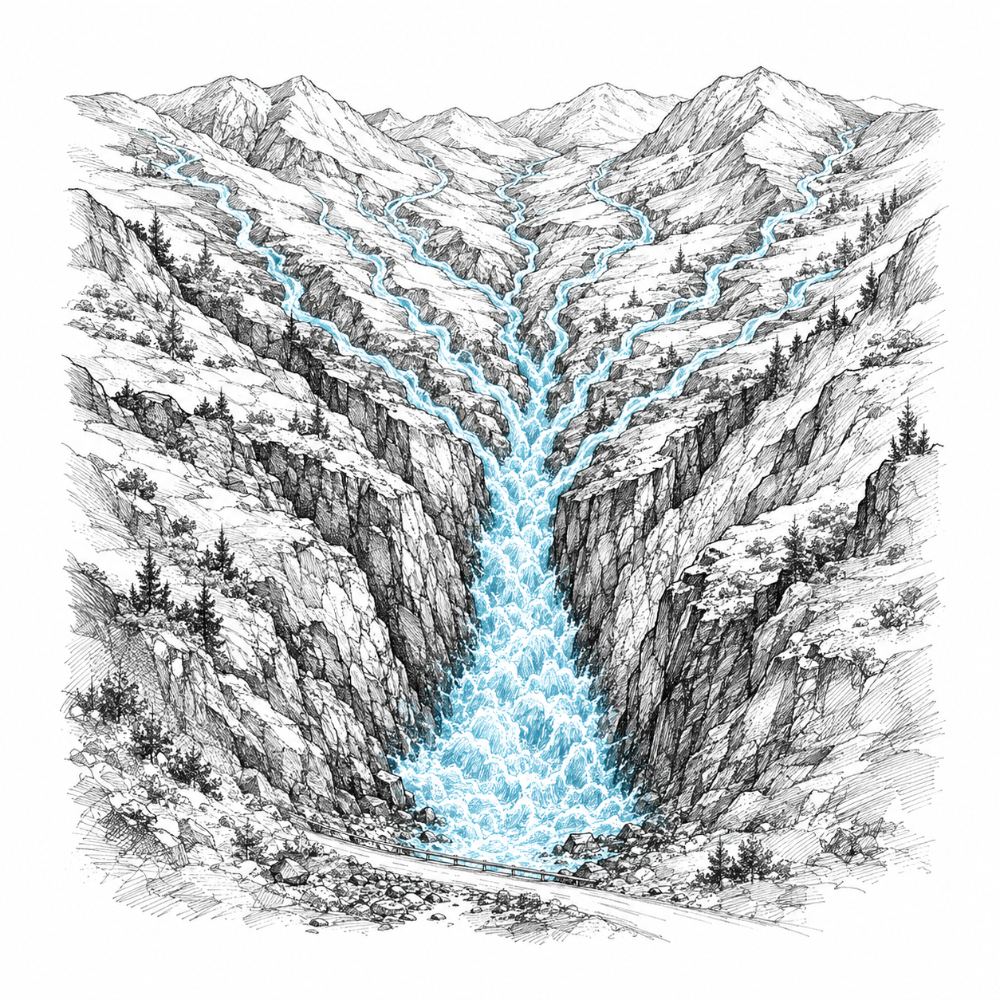

Sketchy Survival 101 · Free Cheat Sheet
Flash Flood Survival
The physics of why moving water kills, and the roughly 40 dollar kit that gets you out.
Flash floods kill fast because moving water is far heavier and stronger than it looks. A shallow brown sheet across a road is not a puddle. It is a freight load of moving weight. Here is what actually moves a car, how to escape one, and the cheap gear that buys you the head start.
The depths that kill
6 inFast moving water knocks a grown adult flat, reaches a car floor, kills traction, and starts the car sliding.
1 ftMany cars float outright and go where the water goes.
2 ftMoves most vehicles on the road, trucks included.
Why it hits so hard
- Water is more than 700 times heavier than the same amount of air.
- Force grows with the square of speed: double the speed is 4 times the push, triple is 9 times.
- Water at just 7 miles an hour pushes about as hard as a 200 mile an hour wind.

Your car is a sealed pocket of air. To the water, it is a boat.
If your car is in the water
Seatbelt. Window. Out.
The order matters more than strength. The whole escape happens in about the first minute, while the car still rides high.
The escape sequence
- Seatbelt off, yours first, then the kids.
- Get a window open. Push the kids out first, oldest to youngest, then you go last.
- Try the power windows right away, before the electronics drown. They often work for a little while.
- If the switch is dead, use a spring loaded punch on a bottom corner of a side window. Not the windshield, it is laminated and will not shatter.
- If the car is still floating, climb onto the roof and stay with it. It is a bigger, more visible raft than you are.
- Only let go into the current if the car is going under. Then float on your back, feet pointed downstream, and steer to the bank.

Keep the punch clipped where your hand finds it blind.

Still floating? The roof beats the current.
Do not
- Do not fight the doors. Under a couple of feet of water they take hundreds of pounds to open.
- Do not stand or wade in fast moving floodwater at any depth. A foot pinned between rocks while the current folds you forward is one of the deadliest traps there is.
- Do not assume your window breaks. Some newer cars use laminated side glass too. Check the little label in the corner of your window before you ever need it.
The kit and the ground
Under 40 Dollars
Portable, cord free, and it travels with you everywhere you go.
about 8 dollars
Spring loaded window punch. Mounted where your hand finds it blind, on the visor or door pocket. Not buried in the trunk.
about 30 dollars
Hand crank weather radio. Picks up weather service alerts straight from the transmitter. No towers, no data, no dead battery.
Read the ground
A dry wash is not land. It is a river holding its breath. Learn to spot the kill zones from a quarter mile off.
- The smooth sandy channel that looks like a campsite.
- The canyon narrows.
- The highway underpass that becomes a bathtub with no drain.
- The low crossing where the road dips to the creek bed.
- The dip in the road with a depth marker beside it.

A mountain is a funnel. Rain miles away arrives as a wall.
The rules that keep you alive
- Turn around, do not drown. Never drive into water covering the road, no matter how shallow it looks.
- Never camp, park, or stop in a wash or low channel, even bone dry, even under blue sky.
- When rain falls upstream, treat it like it fell on you.
- If your car stalls in rising water, get out right away and climb to high ground. Cars are replaceable.
Watch the full video: youtube.com/@SketchySurvival101
More free sheets: sketchysurvival101.com/free
Subscribe so the next flash flood does not catch you flat footed.